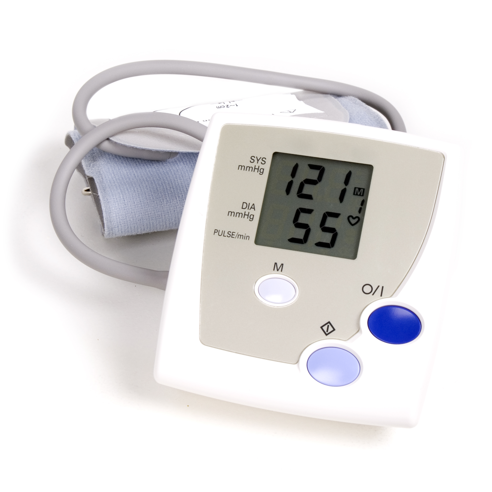

Electronic health records (EHRs)

Health records for patient's have now become digital throughout the UK. Each person has a digital record which includes their medical history, allergies and test results. Very beneficial for use by doctors and pharmacists, the electronic records track prescriptions, record prescribed medication and alert when a patient needs a review or lab test.
The use of EHRs prevents doctors prescribing or pharmacists dispensing medication which could interact with other medication the patient is taking. They also allow for doctors and pharmacists to view the patient's medical history, allowing them to make quicker and more informed decisions.
The variety of data in EHRs, including the huge demographic of various ages, races and health issues.These medical records minimise paperwork, reducing the work of medical proffessionals and lab tests.
Patient management
The increase in the IoT (Internet of Things) and smart devices have created an area for healthcare devices which allow patient's to self monitor and manage their own health.
Examples of this include: wearable devices for heart rate, blood pressure and diabetic glucose monitors.
The use of devices for self monitoring give greater control to patients, this frees up appointments for doctors and can prevent hospital stays as the patient will detect changes before they become serious.
Predictive analytics

The use of predicitve analytics in healthcare is beneficial in many ways, from predicting disease outbreaks, admission rates to hospital and the accuracy of diagnosis.
Additionally, big data is helping in early detection, which allows for earlier and better treatment. This in turn can reduce life-shortening consequences.
Predictive analytics in big data also enable doctors to identify patients at a higher risk of opioid abuse and opiod-related death. Through early detection in identifying risk factors, doctors can work in reversing this.
Medical Imaging

Big data can analyse large numbers of medical images quicker than humans, saving both time and money.
Medical imaging includes: radiography (x-rays), x-ray computed Tomography (CT scans), Magnetic Resonance Imaging (MRI scans) and Ultrasounds.
Applying big data to medical imaging increases efficiency and reduced both the possibility of errors and the need for manual imput.
Preventing human errors
The use of big data in healthcare reduces the problem of human errors, as big data can recognise abnormalittes in prescription of medication and flag them. This can be beneficial in reducing the possibilities of wrong medication or wrong dosages being prescribed.
The ability to collaborate huge amounts of data can also aid doctors in diagnosing patients, or preventing misdiagnosis.